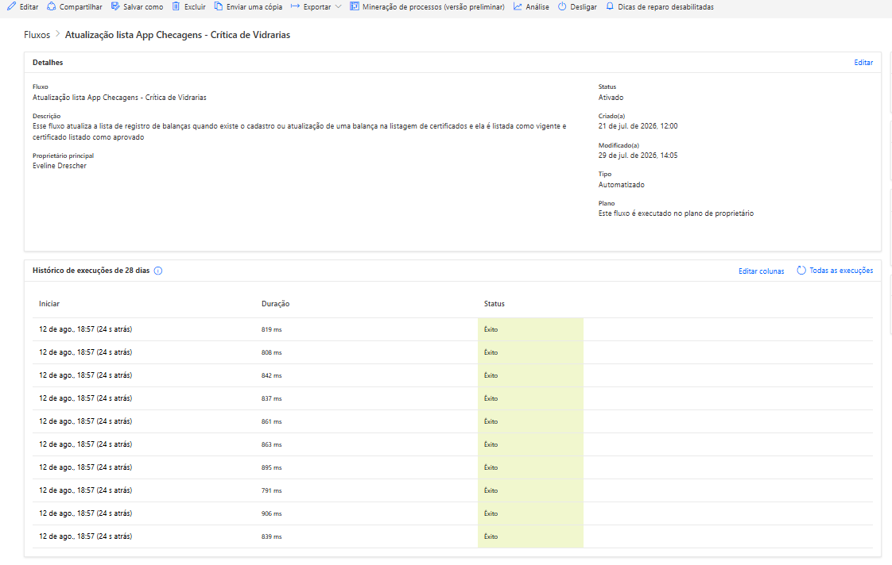
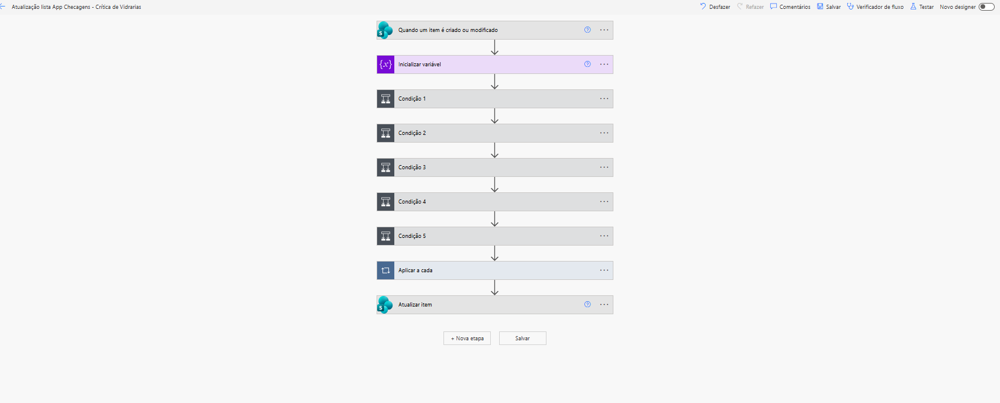
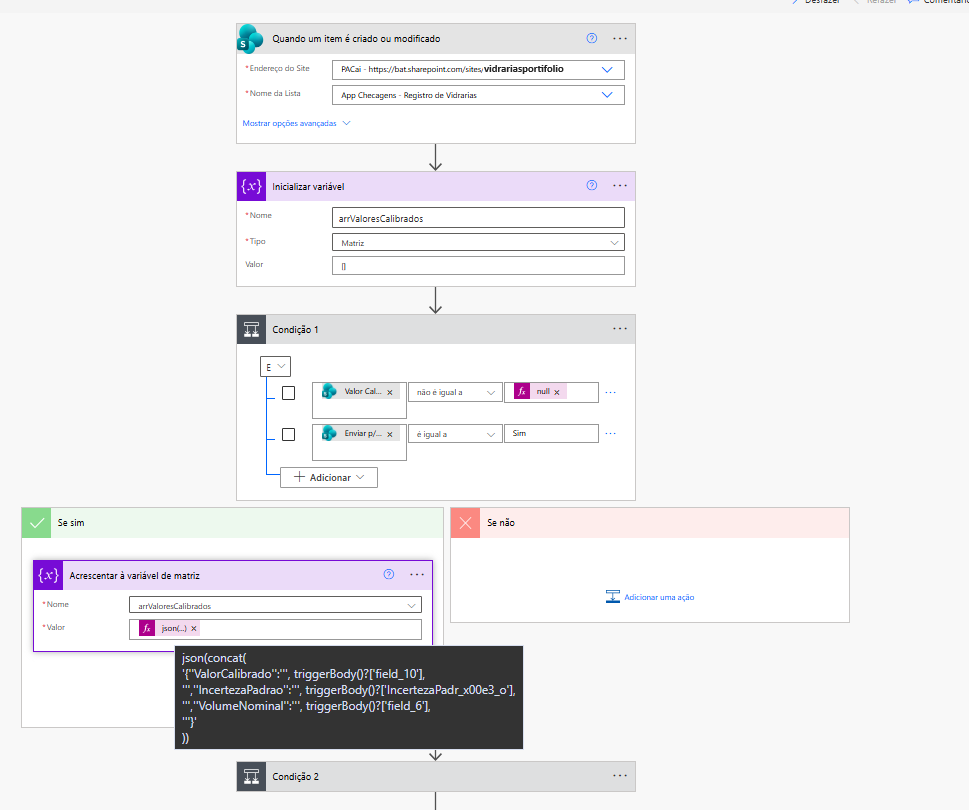
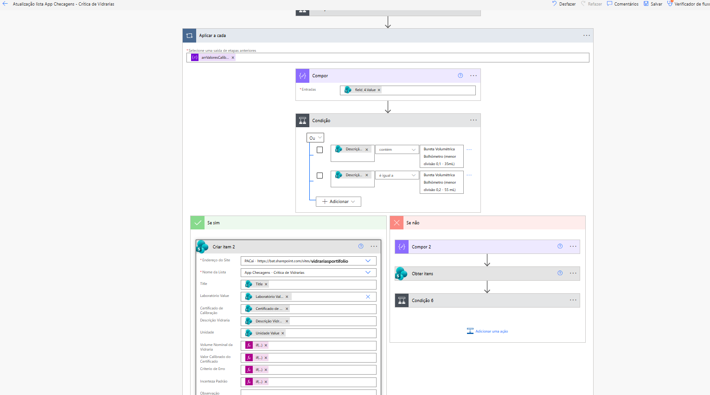

Problema
Listas de informações sobre informações de equipamentos laboratoriais eram dispersas em Excel e toda vez que alguém precisava atualizar alguma coisa era necessário baixar o documento e atualizar novamente dentro do servidor. Três diferentes documentos precisavam ser preenchidos separadamente com informações repetidas, demandando muito tempo e possibilitando divergências de informações.
Objetivo
Os documentos precisavam ser passados para listas no SharePoint e quando a principal era preenchida, as informações deveriam ser passadas automaticamente para as outras duas listas, não necessitando o retrabalho nestas, economizando o tempo e evitando erros.
Desenvolvimento
O primeiro passo foi passar todo o conteúdo de anos dentro de Excel para listas no SharePoint. O primeiro passo foi ajustar as informações garantindo que número, textos e afins estavam classificados corretamente.
Após a criação das listas Registro de Vidrarias e Crítica de Vidrarias, passamos para o foco principal, que é a automação de preenchimento via Power Automate. Para isso eu criei a lista abaixo que é preenchida automaticamente quando o usuário cadastra as informações das Vidrarias na lista correspondente de registro:

Fluxo completo da automação
Na imagem abaixo está o fluxo completo da automação. É importante destacar que existem cinco condições diferentes, isso acontece porque o instrumento laboratorial pode ter de 1 à 5 pontos de calibração para garantir o funcionamento dele.
Na lista de Registro de Vidrarias o usuário cria apenas um registro por instrumento, onde é possível ter 5 colunas chamadas pontos de calibração contabilizando a partir do ponto 1.
Na lista de Crítica de Vidraria, que é preenchida automaticamente por essa automação, estas 5 colunas não existem, pois ao invés disso podem ser criados 5 diferentes registros com informações repetidas, porém com apenas seu respectivo ponto calibrado.
Essa lista é importante principalmente para o time de Qualidade da empresa, que confere essas críticas e garante a confiabilidade dos resultados.

Monitoramento e validação
O processo começa monitorando alterações na lista Registro de Vidrarias. Em seguida, é criada uma variável do tipo Array, responsável por armazenar informações relacionadas às calibrações realizadas.
Antes de prosseguir com o processamento, o fluxo executa uma validação de regras de negócio. Ele verifica se existe um valor calibrado informado e se o registro foi marcado para envio. Somente os registros que atendem a essas condições seguem para as próximas etapas da automação.
Estruturação dos dados
Quando a validação é aprovada, os dados são estruturados em formato JSON, consolidando informações como:
- Valor calibrado;
- Incerteza padrão;
- Volume nominal;
- Demais parâmetros necessários para o tratamento dos dados.
Essas informações são adicionadas dinamicamente a uma matriz (Array), permitindo que múltiplos registros sejam processados de forma organizada e escalável ao longo do fluxo.

Tratamento das condicionais
Após a passagem das cinco condicionais já explicadas, vamos entrar em uma nova validação, que considera se existe uma determinada descrição ou não, assim o fluxo executa uma tomada de decisão automatizada, culminando no registro dentro da lista de acordo com as regras do negócio.
Aqui usei expressões como length, first e condicional if para adequar os registros conforme às necessidades levantadas.

Resultados
A solução reduziu significativamente o esforço manual na avaliação das vidrarias, garantindo maior confiabilidade nos resultados, agilidade na análise dos certificados de calibração e padronização dos critérios adotados pelo controle de qualidade.